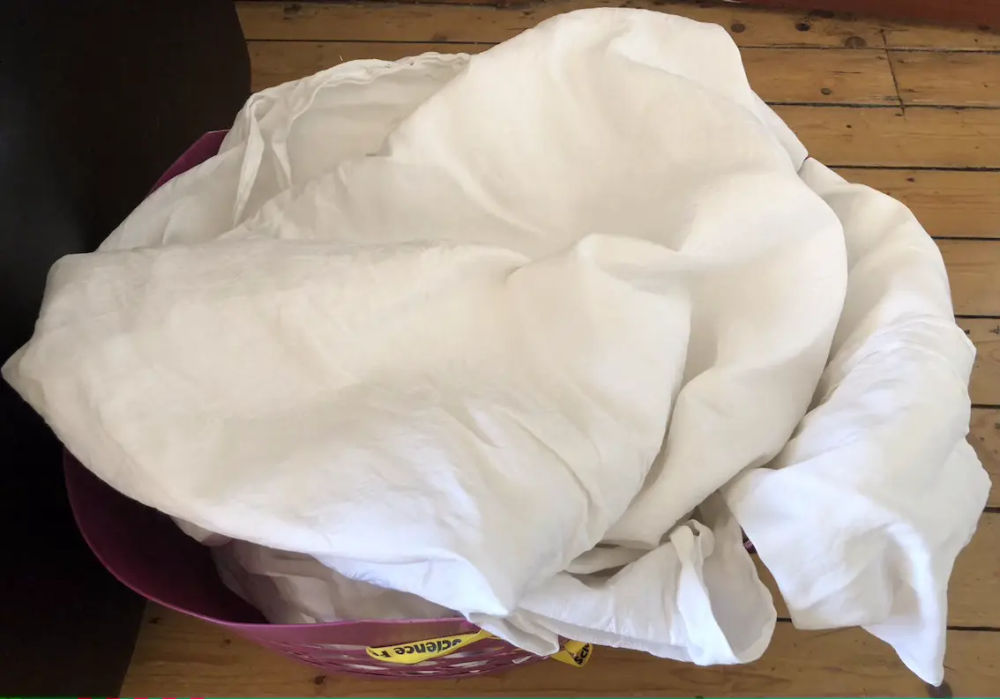

Getting Even More Use From an Old Tablecloth
Due to a misunderstanding, my husband acquired another bundle of tablecloths at another church closing down sale. I'd ear-marked a commemorative tea towel rather than the bundle of cloths. At least I got the tea towel!
As for the tablecloths, they're too small for our table. There are some holes and stains. I could patch them together into a larger table cloth, but it'd be significant work. And we have sufficient tablecloths for the few times we use them.
My other thought was to weave them into a rag rug or some other item. Whatever I did with them, I wanted to try out the natural dyeing skills I'd learnt at a workshop last year. Those cloths wouldn't be white-ish when the project was finished!
To see what I did, you'll need to click on the links below.